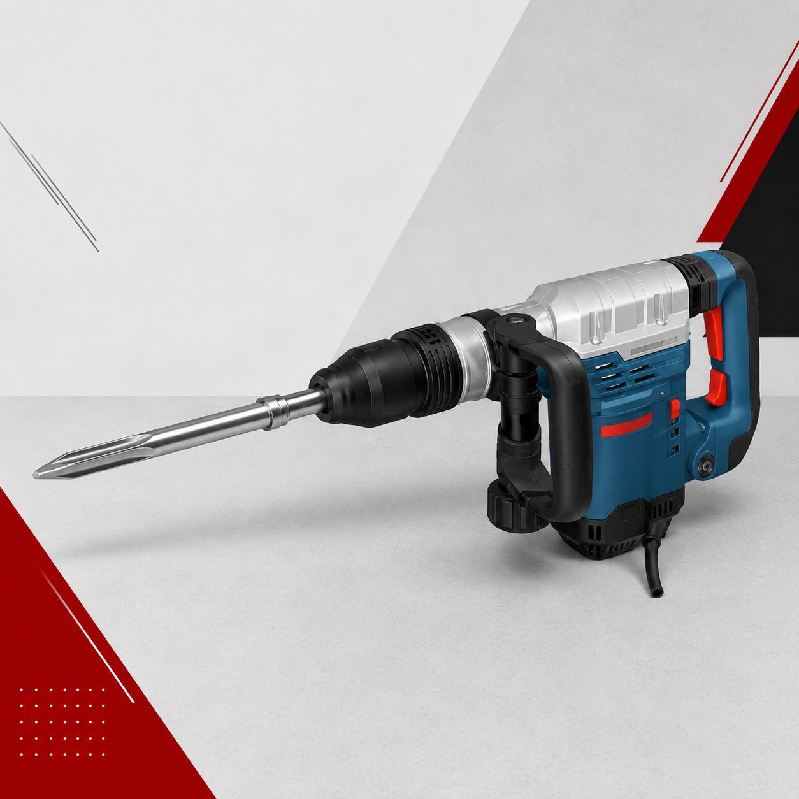
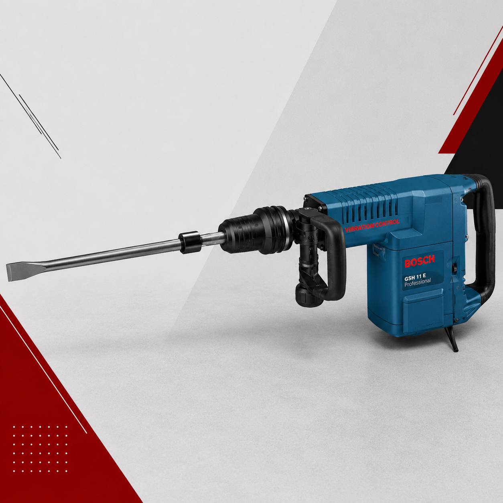
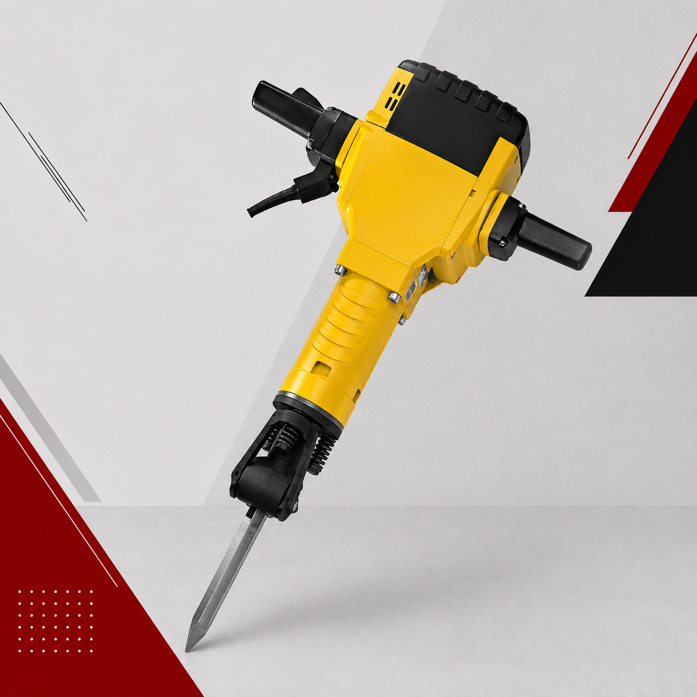

Atendimento em São Paulo
Locação de martelete rompedor em São Paulo
Marteletes rompedores para serviços de demolição em paredes, pisos e lajes. Informe o tipo de serviço, a espessura aproximada, o prazo e o local da obra pelo WhatsApp para consultar a disponibilidade e solicitar seu orçamento.
- Locadora de equipamentos desde 1988
- Equipamentos revisados para locação
- Frete combinado e entrega na obra
Cotar martelete pelo WhatsApp
Preencher pedido rápido
Você fala diretamente com a equipe da LocTubo pelo WhatsApp.
Para serviços de demolição
Marteletes rompedores para consultar conforme a necessidade da obra
O catálogo apresenta opções de 6 kg, 11 kg, 18 kg e 30 kg. Informe a aplicação para consultar a disponibilidade.

Martelete rompedor 6 kg
Para demolição, perfuração, abertura de canaletas e pequenos rompimentos em concreto e alvenaria.

Martelete rompedor 11 kg
Para rompimento em concreto, pisos, lajes, asfalto e estruturas de maior resistência.

Martelete rompedor 30 kg
Para demolições pesadas em concreto armado, asfalto, fundações e pisos industriais.
Orçamento direto
Como pedir seu martelete
Envie as informações essenciais pelo WhatsApp para a equipe entender o equipamento que você precisa consultar.
Descreva o serviço
Informe o material, a área ou a espessura aproximada que precisa romper.
Indique prazo e local
Envie o período de locação e o bairro, cidade ou endereço da obra.
Receba a orientação
A equipe consulta a disponibilidade e segue com o orçamento pelo WhatsApp.
Dúvidas frequentes
Antes de pedir sua cotação
Quais informações preciso enviar para cotar um martelete rompedor?
Envie pelo WhatsApp o tipo de serviço, o material ou a espessura aproximada, o prazo de locação e o local da obra. Se ainda tiver dúvidas sobre o equipamento, descreva a necessidade para receber orientação inicial.
Quais pesos de martelete estão apresentados no catálogo?
O catálogo apresenta marteletes rompedores de 6 kg, 11 kg, 18 kg e 30 kg. Consulte a disponibilidade e a aplicação pelo WhatsApp antes de fechar o pedido.
Há ponteira e talhadeira para consultar?
O catálogo também apresenta ponteira e talhadeira para martelete, com opções de 400 mm e 500 mm. Informe a necessidade para consultar a disponibilidade.
Como funciona a entrega do martelete?
O frete é combinado conforme o local da obra e os equipamentos solicitados. Envie a região pelo WhatsApp para receber a orientação no orçamento.
Pronto para cotar?
Informe o serviço de demolição pelo WhatsApp
Envie o tipo de material, prazo e local da obra. A equipe da LocTubo segue com a orientação e o orçamento.